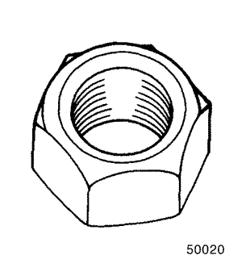

SECCIÓN 2C
SUSPENSIÓN DELANTERA
ESPECIFICACIONES
Especificaciones generales
| Aplicación | Altura de suspensión |
| Centro de la rueda delantera a la parte inferior del paso de la rueda delantera | 344 mm (13,5 pulg.) |
| Centro de la rueda trasera a la parte inferior del paso de la rueda trasera | 343 mm (13,5 pulg.) |
Especificaciones de apriete de la sujeción
| Aplicación | N•m | Lb-pie | Lb-pulg. |
| Tuercas de fijación de las rótulas a las palancas de control | 50 | 37 | 444 |
| Tuerca de la rótula a la mangueta/conjunto soporte | 55 | 41 | 487 |
| Tornillos de fijación delanteros de la palanca de control | 110 | 81 | 972 |
| Tuerca de compresión frenable que une el cubo al árbol de transmisión | 300 | 221 | 2655 |
| Tuerca de vástago de pistón | 60 | 44 | 531 |
| Tuerca de fijación de la barra estabilizadora a la articulación | 50 | 37 | - |
| Tuercas de fijación del conjunto soporte a la carrocería | 60 | 44 | 531 |
| Tuerca de cierre del cartucho del conjunto soporte | 200 | 148 | 1776 |
HERRAMIENTAS ESPECIALES
Tabla de herramientas especiales

 
| 500-20 Tuerca hexagonal |
| J-36661-2 Tornillo forzador |
| J-37105-B-1 Puente de apoyo |
| J-37105-B-2 Adaptador de cojinetes |

| J-37105-B-3 Adaptador de cubos |
| KM-158 Extractor/Instalador |
| KM-307-B Placa de desmontaje |

| KM-329-A Compresor de muelles |

| J-42468 Llave de las tuercas de fijación del conjunto soporte delantero |
| KM-465-A Compresor de muelles delanteros |

| KM-507-B Extractor de rótulas |
| KM-508-A Extractor/Instalador |
DIAGNÓSTICO
Amortiguador del conjunto soporte
Un amortiguador de conjunto soporte es básicamente un amortiguador de absorción de energía. No obstante, los amortiguadores del conjunto soporte resultan más fáciles de extender y replegar con la mano que los amortiguadores convencionales de absorción de energía. En la mayoría de vehículos, incluido este, los amortiguadores del conjunto soporte se usan sólo en la parte delantera. Así, los amortiguadores de absorción de energía se emplean para las ruedas traseras.
Los conjuntos soportes parecen débiles
| Comprobaciones | Acción |
| Compruebe la presión de los neumáticos. | Ajuste la presión de los neumáticos según las especificaciones. |
| Compruebe las condiciones de carga a las que se conduce normalmente el vehículo. | Consulte con el propietario para confirmar que éste comprende lo que significa condiciones normales de carga. |
| Compruebe la eficacia del amortiguador del conjunto soporte a compresión y rebote. | Empuje rápidamente hacia arriba y hacia abajo el parachoques, en la esquina más próxima al amortiguador del conjunto soporte que se esté comprobando. Compare la compresión y el rebote con los de otro vehículo similar que tenga una calidad de suspensión aceptable. Sustituya el amortiguador del conjunto soporte, si fuera necesario. |
Los conjuntos soportes son ruidosos
| Comprobaciones | Acción |
| Compruebe si hay fijaciones dañadas o flojas. | Apriete el amortiguador del conjunto soporte. Sustituya el amortiguador del conjunto soporte, si fuera necesario. |
| Compruebe la eficacia del amortiguador del conjunto soporte a compresión y rebote. | Empuje rápidamente hacia arriba y hacia abajo el parachoques, en la esquina más próxima al amortiguador del conjunto soporte que se esté comprobando. Compare la compresión y el rebote con los de otro vehículo similar que tenga una calidad de suspensión aceptable. Sustituya el amortiguador del conjunto soporte, si fuera necesario. |
Fugas
| Comprobaciones | Acción |
| Compruebe si hay un ligero rastro de líquido. | El amortiguador del conjunto soporte está bien. |
| Compruebe el cubrejuntas en el conjunto soporte totalmente extendido. | Sustituya el amortiguador del conjunto soporte. |
| Compruebe si hay una cantidad excesiva de líquido en el amortiguador del conjunto soporte. | Sustituya el amortiguador del conjunto soporte. |
Rótula y mangueta
Comprobación de la rótula
- Levante la parte delantera del vehículo de manera que la suspensión quede colgando libremente.
- Sujete el neumático por la parte superior e inferior.
- Mueva la parte superior del neumático hacia dentro y hacia fuera.
- Busque algún movimiento horizontal de la mangueta con respecto a la palanca de control.
- Las rótulas deben sustituirse si se encuentran en las condiciones siguientes:
- La rótula está floja.
- La junta de la bola de la rótula está cortada.
- El perno de la bola de la rótula está desconectado de la mangueta.
- El perno de la bola de la rótula queda flojo en la mangueta.
- El perno de la bola de la rótula puede torcerse en su casquillo con la presión del dedo.
Comprobación de los espárragos de la rótula
Durante cada comprobación de la rótula, asegúrese de comprobar el apriete del espárrago de la rótula en el cubo de la mangueta. Una forma de comprobar el desgaste de los espárragos de la rótula es sacudir la rueda a ver si se nota el movimiento del extremo del espárrago o la tuerca almenada en el cubo de mangueta.
Otra forma de comprobar el desgaste es efectuar una comprobación del par de apriete de la tuerca de almenada. Una tuerca floja puede indicar un espárrago fatigado o un orificio en el cubo de la mangueta.
Las rótulas y manguetas dañadas o desgastadas deben ser sustituidas.
Comprobación de fricciones excesivas
Use el siguiente procedimiento para comprobar si hay excesiva fricción en la suspensión delantera:
- Pida ayuda a otro técnico para levantar el parachoques delantero, levantando el vehículo lo más posible.
- Suelte lentamente el parachoques, dejando que el vehículo adopte su altura normal de suspensión. Véase el apartado "Especificaciones generales" de esta sección.
- Mida la distancia entre el nivel de la calzada y el centro del parachoques.
- Empuje hacia abajo el parachoques, suéltelo poco a poco y deje que el vehículo adopte su altura normal de suspensión.
- Mida la distancia entre el nivel de la calzada y el centro del parachoques.
- La diferencia entre las dos medidas debe ser inferior a 12,7 mm (0,5 pulg.). Si la diferencia sobrepasa este límite, revise las palancas de control, los conjuntos soportes y las rótulas en busca de daños o desgaste.
LOCALIZACIÓN DE COMPONENTES
Suspensión delantera
- Barra estabilizadora
- Tuerca de la articulación de la barra estabilizadora
- Articulación de la barra estabilizadora
- Travesaño
- Tuerca del travesaño (dirección delantera)
- Tornillo de conexión de la palanca de control
- Tuerca de la barra estabilizadora
- Palanca de control
- Tornillo de conexión de la rótula
- Rótula
- Tuerca de vástago de pistón
- Arandela
- Tuerca superior del conjunto soporte
- Fijación del conjunto soporte
- Cojinete
- Asiento superior del muelle
- Aislador superior del muelle
- Tope hueco
- Muelle helicoidal
- Empuje
- Tornillo del soporte del empuje
- Mangueta
- Asiento de la tapa
- Cojinete de rueda
- Anillo elástico de retención
- Cubo de la rueda
- Disco de freno
- Arandela
- Tuerca de compresión frenable
MANTENIMIENTO Y REPARACIÓN
SERVICIO EN EL VEHÍCULO

Articulación de la barra estabilizadora
Procedimiento de desmontaje
- Levante y coloque el vehículo sobre apoyos adecuados, de manera que la suspensión quede colgando libremente.
- Desmonte la rueda delantera. Consulte la Sección 2E, Neumáticos y ruedas.
- Quite la tuerca de la barra estabilizadora a la mangueta y la tuerca de la barra a la articulación.

- Desconecte la barra estabilizadora de la mangueta desmontando el conjunto de la articulación.
Procedimiento de montaje
- Monte la barra estabilizadora en el vehículo.
- Coloque la tuerca de la barra estabilizadora a la mangueta y la tuerca de la barra a la articulación.
Apretar
Apriete las tuercas de la articulación de la barra estabilizadora hasta 50 N•m (37 lb-pie).

Conjunto soporte
Herramientas necesarias
Extractor de rótulas KM-507-B
Procedimiento de desmontaje
- Afloje la tuerca de fijación del conjunto soporte a la carrocería que sujeta la parte superior del mismo al vehículo.

- Levante y apoye el vehículo adecuadamente.
- Coloque los soportes regulables gato debajo del bastidor del vehículo.
- Baje el vehículo ligeramente de modo que su peso descanse sobre los soportes regulables y no sobre las palancas de control.
- Desmonte la rueda. Consulte la Sección 2E, Neumáticos y ruedas.
- Desconecte la pinza de freno del conjunto mangueta/soporte y sujétela. No deje la pinza colgando del manguito de freno hidráulico. Consulte la Sección 4D, Frenos de disco delanteros.
- Desenchufe el conector eléctrico del sensor de velocidad del ABS, si procediese.

- Quite la tuerca de la rótula a la mangueta-conjunto soporte.

Aviso: Si no se emplea la herramienta recomendada para separar la rótula del conjunto de mangueta puede dañarse la rótula o su junta.
- Use el extractor de rótulas KM-507-B para separar de la rótula el conjunto de mangueta.
- Desmonte el tirante exterior del conjunto de mangueta. Consulte la Sección 6C, Mecanismo de la dirección asistida [incluye engranaje de piñón y cremallera] o la Sección 6D, Mecanismo de la dirección manual [incluye engranaje de piñón y cremallera].
Aviso: Ponga cuidado en que las juntas de eje no se extiendan demasiado. Cuando uno de los extremos del eje está desconectado, la junta puede extenderse excesivamente. Dicha extensión excesiva puede hacer que se separen los componentes internos. La separación, a su vez, puede provocar un fallo de la junta. Siempre que realice una reparación en los árboles de transmisión, o cerca de ellos, utilice protectores para las juntas guardapolvos. Si no se emplean dichos protectores, la junta guardapolvo interior puede resultar dañada y provocar una avería de la junta.

- Empuje el palier desde el cubo de la rueda delantera.
- Sujete el árbol de transmisión.
- Baje el vehículo para poder llegar a las arandelas y las tuercas del conjunto soporte a la carrocería.
Aviso: Si al manipular el muelle helicoidal de la suspensión delantera se araña o astilla el recubrimiento del mismo, el muelle puede acabar fallando.
- Quite las tuercas de fijación del conjunto soporte a la carrocería.
- Desmonte el conjunto soporte del vehículo.
Procedimiento de montaje
Aviso: Si al manipular el muelle helicoidal de la suspensión delantera se araña o astilla el recubrimiento del mismo, el muelle puede acabar fallando.
- Monte el conjunto soporte al vehículo con las tuercas de fijación del conjunto soporte a la carrocería.
Apretar
Apriete la tuerca del conjunto soporte a la carrocería hasta 60 N•m (44 lb-pie).

- Conecte el árbol de transmisión al cubo de la rueda delantera.
- Conecte el tirante exterior al conjunto de mangueta. Consulte la Sección 6C, Mecanismo de la dirección asistida [incluye engranaje de piñón y cremallera] o la Sección 6D, Mecanismo de la dirección manual [incluye engranaje de piñón y cremallera].
- Conecte la rótula al conjunto de mangueta.
- Coloque la tuerca de la rótula a la mangueta/conjunto soporte.
Apretar
Apriete la tuerca de la rótula a la mangueta/conjunto soporte hasta 55 N•m (41 lb-pie).
- Enchufe el conector eléctrico del sensor de velocidad del ABS, si procediese.

- Conecte la pinza de freno al conjunto mangueta/soporte. Consulte la Sección 4D, Frenos de disco delanteros.
- Monte la rueda. Consulte la Sección 2E, Neumáticos y ruedas.
- Coloque una nueva tuerca de compresión frenable del palier en el cubo.
Apretar
Apriete la tuerca de compresión frenable del palier en el cubo hasta 300 N•m (221 lb-pie).
- Encaje el manguito de la tuerca de compresión frenable en el palier.
Palanca de control
Herramientas necesarias
Extractor de rótulas KM-507-B
Procedimiento de desmontaje
- Levante y apoye el vehículo adecuadamente.
- Coloque los soportes regulables gato debajo del bastidor del vehículo.
- Baje el vehículo ligeramente de modo que su peso descanse sobre los soportes regulables y no sobre las palancas de control.
- Desmonte la rueda. Consulte la Sección 2E, Neumáticos y ruedas.
- Desconecte la barra estabilizadora de la palanca de control quitando el conjunto con tornillos de la articulación de la palanca de control. Consulte el apartado "Barra estabilizadora y antivibradores" en esta sección.
- Quite de la rótula el clip de retención y la tuerca de la rótula a la mangueta/conjunto soporte.
- Use el extractor de rótulas KM-507-B para separar la rótula del conjunto de mangueta.

- Quite el tornillo de fijación delantero de la palanca de control.
- Quite los tornillos de fijación traseros de la palanca de control y desmonte el soporte.
- Desmonte la palanca de control del vehículo.
Procedimiento de montaje
- Monte la palanca de control en el vehículo.
- Conecte la parte delantera de la palanca de control a la carrocería del vehículo con su arandela y tornillo de fijación delantero.
- Aplique sellante para roscas en los tornillos de fijación traseros de la palanca de control.
- Conecte la parte trasera de la palanca de control a la carrocería del vehículo con su arandela y tornillos de fijación traseros.
Importante: No apriete todavía los tornillos de la palanca de control.
Aviso: Use una tuerca autoblocante nueva a la hora de montar el conjunto con tornillos de la articulación de la palanca de control. En caso contrario la tuerca se aflojará por la vibración normal del vehículo, el cual acabará sufriendo daños.
- Monte el conjunto con tornillos de la articulación de la barra estabilizadora. Consulte el apartado "Barra estabilizadora y antivibradores" de esta sección.
- Conecte la rótula a la mangueta.
- Apriete la tuerca de la rótula a la mangueta/conjunto soporte.
Apretar
Apriete la tuerca de la rótula a la mangueta/conjunto soporte hasta 55 N•m (41 lb-pie).
- Conecte el clip de retención al espárrago de la rótula.
- Monte la rueda. Consulte la Sección 2E, Neumáticos y ruedas.
- Levante el vehículo.
- Coloque los soportes regulables.
- Baje el vehículo.

Importante: Las palancas de control deben soportar el peso del vehículo mientras se estén apretando sus tornillos de fijación.
- Apriete los tornillos de fijación traseros de la palanca de control.
Apretar
Apriete los tornillos de fijación traseros de la palanca de control hasta 110 N•m (81 lb-pie).
- Apriete el tornillo de fijación delantero de la palanca de control.
Apretar
Apriete el tornillo de fijación delantero de la palanca de control hasta 110 N•m (81 lb-pie).
- Levante el vehículo.
- Retire los soportes regulables.
- Baje el vehículo.

Mangueta
Procedimiento de desmontaje
- Desmonte las ruedas delanteras. Consulte la Sección 2E, Neumáticos y ruedas.
- Quite la tuerca de compresión frenable.
- Retire el extremo del tirante de la mangueta.
- Desmonte la rótula de la palanca de control.
- Desmonte la pinza de freno.
- Desmonte el freno de disco. Consulte la Sección 4E, Frenos de disco delanteros.

- Desmonte el sensor de velocidad de la rueda del ABS, si dispone del mismo. Consulte la Sección 4F, ABS desde la mangueta.
- Desmonte la placa de apoyo.
- Quite los tornillos del conjunto soporte delantero.
- Desmonte el conjunto de mangueta.
Procedimiento de montaje
- Monte el conjunto de mangueta al conjunto soporte delantero con su tornillo y tuercas.
Apretar
Apriete el tornillo y las tuercas del conjunto de mangueta al conjunto soporte delantero hasta 100 N•m (74 lb-pie).
- Monte la placa de apoyo con sus tornillos.
Apretar
Apriete los tornillos de la placa de apoyo hasta 4 N•m (3 lb-pie).

- Monte el sensor de velocidad de la rueda del ABS.
- Monte el disco y la pinza de freno. Consulte la Sección 4D, Frenos de disco delanteros.
- Monte la rótula de la palanca de control. Consulte esta Sección, Reparación de los componentes.
- Conecte el extremo del tirante a la mangueta. Consulte esta misma sección.


Conjunto del travesaño
Procedimiento de desmontaje
- Desmonte las ruedas delanteras.
- Quite la tuerca (inferior) de la articulación de la barra estabilizadora y la rótula de la palanca de control. Consulte esta misma sección.
- Desmonte la rótula del extremo del tirante. Consulte esta misma sección.
- Quite los tornillos de la barra de reacción de la fijación del motor.

- Vacíe el aceite de la dirección asistida.
- Desmonte los racores de los tubos de la dirección asistida.
- Desmonte la junta inferior del eje intermedio.
Precaución: No desmonte las piezas mencionadas del vehículo cuando el motor esté caliente, de lo contrario estos componentes calientes podrían causar lesiones personales.

- Desmonte el conjunto travesaño.
Precaución: Antes de desmontarlo y a fin de evitar lesiones personales o daños al vehículo, deberá sujetarse el travesaño con soportes regulables.

- Desmonte del travesaño la barra estabilizadora, el mecanismo de la dirección asistida y la palanca de control.

Procedimiento de montaje
- Monte la barra estabilizadora, el mecanismo de la dirección asistida y la palanca de control en el travesaño.
- Coloque la tuerca de la parte delantera y el tornillo de la parte trasera del conjunto travesaño a la carrocería.
Apretar
Apriete la tuerca de la parte delantera a la carrocería y el tornillo de la parte trasera a la carrocería del conjunto travesaño hasta 150 N•m (111 lb-pie).
- Conecte la junta inferior del eje intermedio y los racores de los tubos de la dirección asistida.
Apretar
Apriete los racores de la dirección asistida hasta 22 N• m (16 lb-pie).
- Llene el depósito con aceite para la dirección asistida.
- Compruebe la existencia de fugas. Si las hubiera, corrija la causa de las mismas y purgue el sistema. Consulte la Sección 6A, Purga del sistema de la dirección asistida.
- Coloque los tornillos de la barra de reacción de la fijación del motor.
Apretar
Apriete los tornillos de la barra de reacción de la fijación del motor hasta 60 N•m (44 lb-pie).

- Coloque la tuerca de la rótula del extremo del tirante.
Apretar
Apriete la tuerca de la rótula del extremo del tirante hasta 45 N•m (33 lb-pie).
- Coloque la tuerca (inferior) de la articulación de la barra estabilizadora y la rótula de la palanca de control. Consulte esta misma sección.

Barra estabilizadora
Procedimiento de desmontaje
- Desmonte el conjunto travesaño. Consulte esta misma sección.
- Desatornille los tornillos de la abrazadera en U para desmontar la barra estabilizadora del conjunto travesaño.

Procedimiento de montaje
- Coloque los tornillos de la abrazadera en U de la barra estabilizadora.
Apretar
Apriete los tornillos de la abrazadera en U de la barra estabilizadora hasta 25 N•m (18 lb-pie).
- Desmonte el conjunto travesaño. Consulte esta misma sección.
REPARACIÓN DE LOS COMPONENTES

Rótula
Procedimiento de desmontaje
- Levante y apoye el vehículo adecuadamente.
- Coloque los soportes regulables debajo del bastidor del vehículo y baje éste ligeramente de modo que el peso del vehículo descanse sobre los soportes regulables y no sobre las palancas de control.
- Desmonte la rueda. Consulte la Sección 2E, Neumáticos y ruedas.
- Desmonte la palanca de control. Consulte el apartado "Palanca de control" en esta sección.
- Quite los tornillos de fijación de la rótula.
Procedimiento de montaje
- Conecte la rótula a la palanca de control con sus tornillos de fijación.
- Coloque las tuercas para sujetar los tornillos por debajo de la palanca de control.
Apretar
Apriete las tuercas de fijación de las rótulas a las palancas de control hasta 64 N•m (47 lb-pie).
- Monte la palanca de control. Consulte el apartado "Palanca de control" en esta sección.

Cubo y rodamientos
Herramientas necesarias
Tuerca hexagonal 500-20
Tornillo forzador J-36661-2
Puente de soporte J-37105-B-1
Adaptador de cojinetes J-37105-B-2
Adaptador de cubos J-37105-B-3
Procedimiento de desmontaje
- Desmonte el árbol de transmisión del cubo de la rueda delantera. Consulte el apartado "Conjunto soporte" de esta sección.

- Desmonte el cubo de la rueda con la ayuda del puente de soporte J-37105-B-1, el adaptador de cubos J-37105-B-3, la tuerca hexagonal 500-20 y el tornillo forzador J-36661-2.

- Desmonte el protector de freno. Consulte la Sección 4D, Frenos de disco delanteros.
- Desmonte el anillo elástico exterior.
- Desmonte el cojinete de rueda con la ayuda del puente de soporte J-37105-B-1, el adaptador de cojinetes J-37105-B-2, la tuerca hexagonal 500-20 y el tornillo forzador J-36661-2.
- Limpie el alojamiento de la mangueta.
Procedimiento de montaje
- Monte el anillo elástico exterior e introduzca el cojinete de rueda en su sitio con la ayuda del puente de soporte J-37105-B-1, el adaptador de cojinetes J-37105-B-2, la tuerca hexagonal 500-20 y el tornillo forzador J-36661-2.
- Monte el protector de freno. Consulte la Sección 4D, Frenos de disco delanteros.
- Introduzca el cubo de rueda en su sitio con la ayuda del adaptador de cubos J-37105-B-3, el adaptador de cojinetes J-37105-B-2, la tuerca hexagonal 500-20 y el tornillo forzador J-36661-2.
- Monte el árbol de transmisión en el cubo de la rueda delantera. Consulte el apartado "Conjunto soporte" de esta sección.

Casquillos de la palanca de control
Herramientas necesarias
Extractor/instalador KM-508-A
Extractor/instalador KM-158
Placa de desmontaje KM-307-B
Procedimiento de desmontaje
- Desmonte la palanca de control. Consulte el apartado "Palanca de control" en esta sección.
- Saque a presión el casquillo trasero con una prensa, el extractor/instalador KM-158 y la placa de desmontaje KM-307-B.

- Saque a presión el casquillo delantero con el extractor/instalador KM-508-A y el extractor/instalador KM-158.

Procedimiento de montaje
- Recubra el eje trasero de la palanca de control con lubricante para usos generales. Consulte la Sección 0B, Información general.
- Coloque a presión el casquillo trasero en el eje. La cara plana del casquillo debe quedar en el lado superior, igual que la rótula. Use el extractor/instalador KM-508-A para sujetar la palanca de control.

- Recubra la parte exterior del casquillo delantero y la parte interior de la palanca de control inferior con lubricante para usos generales. Consulte la Sección 0B, Información general.
- Coloque a presión el nuevo casquillo en la palanca de control de atrás hacia delante usando el extractor/instalador KM-508-A.
- Centre el casquillo.
- Monte la palanca de control. Consulte el apartado "Palanca de control" en esta sección.

Conjunto soporte delantero
Herramientas necesarias
Compresor de muelles KM-329-A
Llave de las tuercas de fijación del conjunto soporte delantero J-42468
Procedimiento de desmontaje
- Desmonte el conjunto soporte. Consulte el apartado "Conjunto soporte" de esta sección.
- Apriete el conjunto soporte al compresor de muelles KM-329-A. Asegúrese de que los ganchos se acoplen bien al muelle del soporte.
- Comprima el muelle delantero con el compresor de muelles delanteros KM-329-A.

- Use una llave fija para sujetar el vástago roscado del pistón mientras quita la tuerca del vástago de pistón con la llave de las tuercas de fijación del conjunto soporte delantero J-42468.

- Desmonte paso a paso la fijación del conjunto soporte, el cojinete del soporte, el asiento superior del muelle, el aislador superior del muelle, el tope hueco, el muelle helicoidal y el conjunto soporte.
Importante: Anote la posición del asiento del muelle delantero con respecto al soporte de la mangueta al conjunto soporte amortiguador. Cuando vuelva a montar el localizador del muelle delantero, colóquelo en la misma posición.
Procedimiento de montaje
- Monte el aislador inferior y el muelle.
- Comprima el muelle con el compresor de muelles KM-329-A.
- Monte paso a paso la fijación del conjunto soporte, el cojinete del conjunto soporte, el asiento superior del muelle, el aislador superior del muelle, el tope hueco, el muelle helicoidal y el conjunto soporte.
- Use una llave fija para sujetar el vástago roscado del pistón mientras coloca la tuerca del vástago de pistón con la llave de las tuercas de fijación del conjunto soporte delantero J-42468.
Apretar
Apriete la tuerca del vástago de pistón hasta 60 N•m (44 lb-pie).
Importante: Coloque el muelle helicoidal en su posición original sobre su asiento. Compruebe las condiciones de instalación del muelle helicoidal.
DESCRIPCIÓN GENERAL Y FUNCIONAMIENTO DEL SISTEMA
Suspensión delantera
La suspensión delantera para este vehículo es una combinación de sistema de muelles y conjunto soporte/mangueta.
Las palancas de control giran desde la carrocería. Los pivotes de la palanca de control inferior utilizan casquillos de goma. El extremo superior del conjunto soporte está aislado mediante una fijación de goma y contiene un cojinete que permite el giro de la rueda.
El extremo inferior de la mangueta gira sobre una rótula atornillada a la palanca de control. La rótula está sujeta a la mangueta con una tuerca, y a la palanca inferior de control con remaches.
Cuando se efectúe una reparación de la fijación de la palanca de control a la carrocería y de los antivibradores de la barra estabilizadora a la misma, asegúrese de que los tornillos de fijación estén flojos hasta que las palancas de control se desplacen hasta la altura de la suspensión, que es la altura en orden de marcha. La altura de suspensión es la posición normal a la que se mueven las palancas de control cuando el vehículo descansa sobre el suelo. Consulte el apartado
"Especificaciones generales" de esta sección.